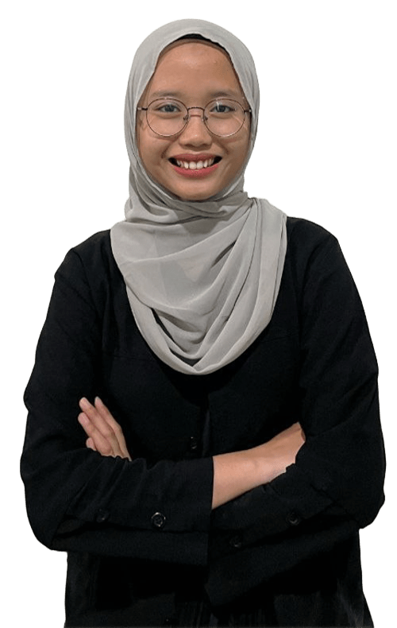

Hello, my name is
Aurellia Lathifah Khairunnisa
I'm an Information Systems student.

I'm an Information Systems student.
Mahasiswa Sistem Informasi dengan semangat tinggi untuk belajar dan berkembang di bidang teknologi. Memiliki minat yang kuat untuk mengeksplorasi inovasi dan manajemen produk. Aktif terlibat dalam organisasi kampus yang mendukung pengembangan soft skills dan kepemimpinan. Antusias untuk terus mengembangkan pengetahuan akademis dengan melibatkan pengalaman praktis.
| Keterampilan teknis | Keterampilan Non-Teknis |
|---|---|
| Microsoft Office (Word, Excel) | Komunikatif |
| Desain grafis dasar menggunakan Canva | Manajemen waktu |
| Dasar pemrograman bahasa Java | Pemecahan masalah |